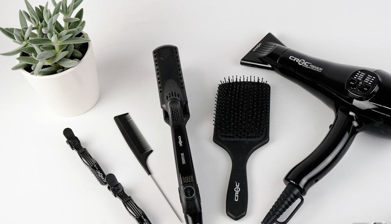
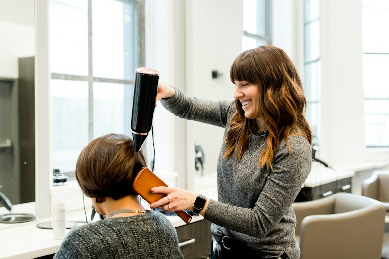

Hair Studio & Colorimetría · Recoleta
Tu pelo es tu firma. Elevamos tu color.
Huimos del concepto de peluquería ruidosa. Creamos rubios perfectos, balayages de autor y diseños de color partiendo de un diagnóstico exhaustivo, preservando la salud de tu fibra capilar por sobre todo.
Reservar diagnósticoAtención con turno previo. Agenda abierta para el próximo mes.
- PlatinoNivel 10
- Rubio mielNivel 8
- CobrizoNivel 6.4
- CenizaNivel 7.1
- ChocolateNivel 4
- Negro azuladoNivel 1.1
Los seis tonos base sobre los que trabajamos. El tuyo sale de combinarlos: en el diagnóstico definimos el nivel de partida, hasta dónde se puede aclarar sin riesgo y en cuántas sesiones.
Arte y ciencia capilar
Tres formas de trabajar tu pelo
-
Colorimetría avanzada
Diseño de balayage, babylights y correcciones complejas. Buscamos el tono exacto que complementa tu piel y que se desgasta de forma pareja con los lavados.
-
Recuperación capilar
Protocolos K18, Olaplex y rituales Kérastase. Restauramos los enlaces de la fibra antes, durante y después de cada proceso químico.
-
Arquitectura de corte
Cortes de autor según tu visagismo y la textura natural del pelo, pensados para que se mantengan solos en casa.
Filosofía Atelier
El lujo del tiempo y la atención uno a uno
Tu cita es un ritual. Trabajamos a puertas cerradas con una agenda estricta para que el estilista esté enfocado únicamente en tu diseño. Café de especialidad y un ambiente de verdad silencioso.
- Prueba de mecha y test de elasticidad obligatorios antes de cualquier aclaración.
- Stock exclusivo de líneas L'Oréal Professionnel y Redken.
- Asesoramiento de rutina en casa, con los productos que ya tenés.

Ubicación y contacto
En el corazón de Recoleta

Dirección
Av. Callao 1500 (y Las Heras)
Recoleta, CABA
Cómo llegar
Subte D (Callao) o H (Las Heras)
Colectivos 17, 124, 10, 59, 101, 37
Estacionamiento
Convenio en Av. Callao 1550
Una hora sin cargo con tu ticket
Consultas habituales
Lo que conviene saber antes
¿Por qué exigen un diagnóstico antes de teñir?
Porque priorizamos la integridad del pelo. En la consulta inicial, de 20 minutos, evaluamos la porosidad y el historial químico de la fibra. Eso nos dice si el nivel de aclaración que querés es posible sin riesgo de corte químico.
¿Cuáles son las formas de pago?
Efectivo, transferencia y tarjetas de crédito o débito. Para turnos de alta demanda, como balayage o corrección de color, pedimos una seña del 30% para blindar tu lugar en la agenda.
¿Trabajan con cabellos previamente dañados?
Sí, somos especialistas en corrección. Si el test de mecha indica que el pelo no va a soportar una decoloración, armamos primero un plan de recuperación de uno a tres meses y recién después hacemos el color.